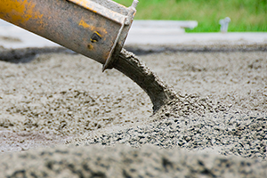
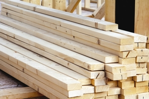
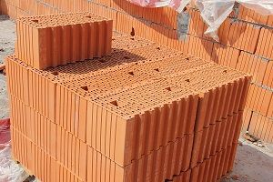
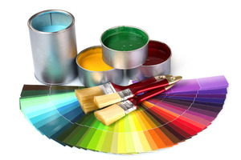
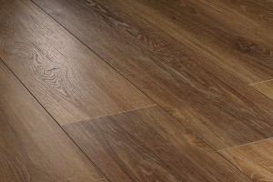
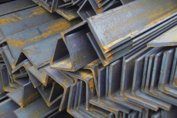
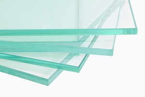

Бетонная смесь М200, для изготовления которой используются М400 цемент, востребована в области жилищного строительства.

Стеновой Гипсокартон предназначен для сооружения перегородок, обшивки стен, монтажа откосов и дверных проемов. Чаще всего встречаются листы шириной 1200 мм и длиной 2000 мм, 2500 мм и 3000 мм.

Доски из лиственницы и дуба. Эти материалы обладают высокими прочностными данными, а также не подвержены гниению, образованию грибка.

Строительный или рядовой кирпич (ГОСТ 530–2007 от 01.03.2008), применяют в обустройстве как внутренних стен зданий, так и наружных.

Олифа и краски на ее основе предназначены для внутренних работ, для разведения густотертых красок, для пропитки деревянных поверхностей.

Стандартный ламинат. Наиболее популярный вид ламината, который встречается чаще всего в домах и коммерческих помещениях. Такое покрытие имитирует паркет, но стоит гораздо дешевле.

Перлитная сталь — с низким содержанием легирующих добавок;

Для установленных в труднодоступных местах окон, которые проблематично вымыть с внешней стороны, все чаще и чаще используют инновационный продукт – самоочищающиеся стекла.